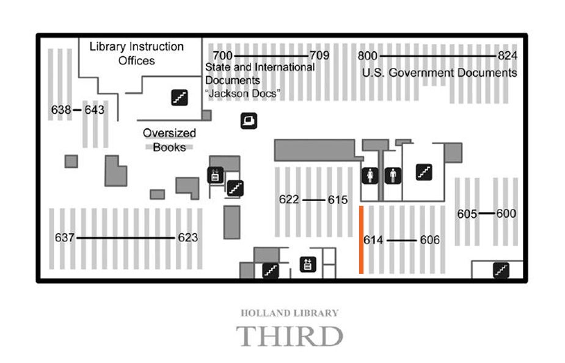

Basement Ground 1st 2nd 3rd Map
Mouse over the map of clickable areas to access images.

Stack #614
Subclass Q Science (General)
Subclass QA Mathematics
Subclass QB Astronomy
Subclass QC Physics
Subclass QD Chemistry
Subclass QE Geology
Subclass QH Natural history - Biology